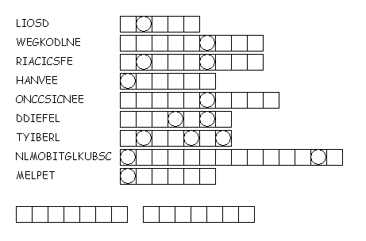

This week's lessons: Deuteronomy 18:15-20, Psalm 111, 1 Corinthians 8:1-13, Mark 1:21-28
This
week's lessons: Deuteronomy
18:15-20, Psalm
111, 1
Corinthians 8:1-13, Mark
1:21-28
Middle-School Pew-work
|
You probably don't have to worry about food that's been sacrificed to idols, but what things do you encounter in an ordinary week that some people might think are blasphemous or anti-Christian? ____________________________________________________________________________________________________________________________________________________________________________ ____________________________________________________________________________________________________________________________________________________________________________________________________________________________________________________________________________________________________________________________________________________________________________________________________________________________________________________________________________________________________________________________________
|
|
|
 |
b) your care and concern for the “weaker members” of your Christian community? ____________________________________________________________________________________________________________________________________________________________________________________________________________________________________________________________________________________________________________ |
Next week's lessons: Isaiah 40:21-31, Psalm 147:1-11, 20c, 1 Corinthians 9:16-23, Mark 1:29-39